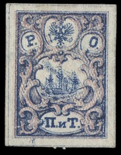
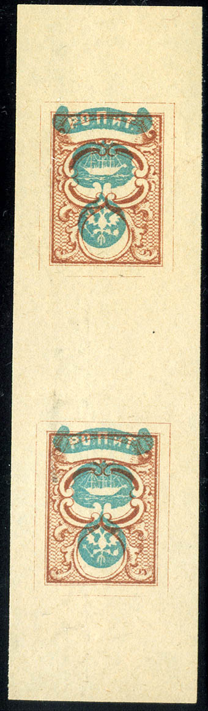
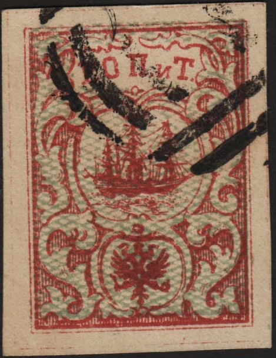
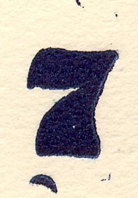
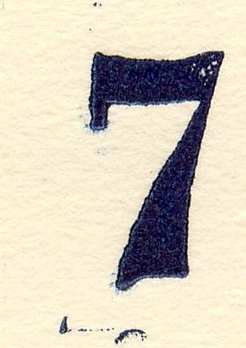
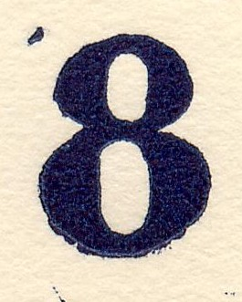

Return To Catalogue - Russian postoffices in Turkey, part 1, 1863 issue - Russian postoffices in Turkey, part 3 - Russian postoffices in Turkey, part 4 - Russia Overview
Note: on my website many of the
pictures can not be seen! They are of course present in the
catalogue;
contact me if you want to purchase the catalogue.
(Reduced sizes)
(10) pa blue and brown (2) Pi red and blue (10) pa red with blue underprint (10) pa red with blue underprint (ship and eagle no lines) (2) Pi blue with red underprint (2) Pi blue with blue underprint (ship and eagle no lines)
Value of the stamps |
|||
vc = very common c = common * = not so common ** = uncommon |
*** = very uncommon R = rare RR = very rare RRR = extremely rare |
||
| Value | Unused | Used | Remarks |
| 10 pa blue and brown | RRR | RRR | Size 15 1/2 x 21 mm; printed in sheets of 28 (7x4) giving rise to 28 types. |
| 2 Pi red and blue | RRR | RRR | Size 15 1/2 x 21 mm; printed in sheets of 28 (7x4) giving rise to 28 types. |
| With lined (horizontal) network underprint | |||
| 10 pa red | *** | *** | Size 16 x 21 1/2 mm |
| 2 Pi blue | R | R | Size 16 x 21 1/2 mm |
| With lined (vertical) network underprint (eagle and value no lines) | |||
| 10 pa red | RR | RR | |
| 2 Pi blue | RR | RR | |
On letter:
The inscription 'P.O.P.n.T' stands for: 'Russkoe Obshchestvo Parokhodstva I Torgovli' which means: 'Russian Company for Steam Shipping and Trade' in Russian. There was an agreement between the Russian govenment and this company to use the offices of the company as postal offices in Turkey. These stamps had no value indicated on them.


Stamps with a typical dots cancel; "783" for Beirut and
"787" (Saloniki)
Some of the triangular numeral dots cancels used on these stamps (usually applied in blue ink): 777 (Batum), 778 (Trebizonde), 779 (Mytilene), 780 (Smyrna), 781 (Merson), 782 (Alexandrette), 783 (Beirut), 784 (Jaffa), 785 (Alexandria), 787 (Saloniki) etc.

Another square with dots cancel.
Reprints seem to exist of all these stamps (slightly different colours and papers).

Reprints, they are quite far apart
I've been told that the above stamps are official
reprints, however in the book 'The forged Stamps of all
Countries' by J.Dorn, it is mentioned that they are unauthorised
reprints. There is an very large margin between two stamps.
According to 'Russian post in the Empire, Turkey, China and the
post in the kingdom of Poland' by S.V.Prigara; the reprints were
made around 1875 (all values, except the 10 pa vertical network
underprint) and again in 1892 (all 6 values). It is mentioned
there that the second color was printed with new (altered)
stones. Pictures of reprints of 1892 and original stamps can be
found in 'The London Philatelist' of 1906 (page 215); but the
images are not very clear.... It is stated that 350 reprints were
made.
Senf forgery, with inscription 'FALSCH'
at the bottom; the ship design is different from the genuine
stamps and the letters are too thin.


Left: forgery (possibly of Italian origin, most likely made by
Oneglia). Next to it a forgery probably made by the same forger
(judging from the cancel, which appears to be a bar cancel with
"1" as often used by Oneglia).
Forgery made by the forger Sperati: 'proof' in black
Another black 'proof' of made by Sperati, showing the two parts
of this stamp.

Sperati forgery
Michael Zareski forged letter. Zareski was a forger from Paris
who was active in the 1960's. The Russian Levant stamp was added
to this letter by him.
1 k brown 1 k orange (1884) 1 k black and yellow (1879) 2 k black and red (1879) 2 k green (1884) 3 k green 5 k blue 5 k lilac (1884) 7 k red and grey (1879) 7 k blue (1884) 10 k red and green Surcharged

(Reduced size)
'7' on 10 k red and green (1879) '8' on 10 k red and green (1876)
The size of these stamps is 16 1/2 x 22 1/2 mm.
Value of the stamps |
|||
vc = very common c = common * = not so common ** = uncommon |
*** = very uncommon R = rare RR = very rare RRR = extremely rare |
||
| Value | Unused | Used | Remarks |
| Watermark 'Wavy lines', perforated 11 1/2 (1868) | |||
| 1 k brown | *** | *** | |
| 3 k | *** | *** | |
| 5 k blue | *** | *** | |
| 10 k | *** | *** | |
| Watermark 'Wavy
lines', perforated 14 1/2 Horizontally or vertically laid paper (1872) |
|||
| 1 k brown | *** | * | Vertically laid paper: *** |
| 1 k black and yellow | * | * | Vertically laid paper: ** |
| 2 k black and red | ** | ** | Vertically laid paper: *** |
| 3 k | *** | * | Vertically laid paper: *** |
| 5 k blue | * | * | Vertically laid paper: *** |
| 7 k red and black | ** | * | Vertically laid paper: *** |
| 10 k | * | * | Vertically laid paper: R |
| 7 on 10 k | R | R | Surcharge in black or blue '7' fat (R) or thin (RRR) |
| 8 on 10 k | R | R | Surcharge in black or blue. |
| Perforated 14 1/2 (1884); one color only | |||
| 1 k yellow | c | c | |
| 2 k green | c | c | |
| 5 k lilac | * | * | |
| 7 k blue | * | c | |
Proofs in other colors exists of the 1 and 10 kop values of the 1868 issue. Also a 3 k red imperforate exists (prepared, but not issued). Source: 'Russian post in the Empire, Turkey, China and the post in the kingdom of Poland' by S.V.Prigara. Other imperforate stamps are also proofs.
  
Forged surcharges made by the forger Fournier as they can be
found in 'The Fournier Album of Philatelic Forgeries'
The forger Oneglia lists many forged overprints on genuine stamps (including inverted) in blue and black color in his 1906 pricelist.
The surcharged stamps were extensively forged. All surcharges on the stamps with perforation 11 1/2 are forgeries.


{kind=link}
{kind=link}
{kind=link}
{kind=link}
{kind=link}
{kind=link}
{kind=link}
{kind=link}